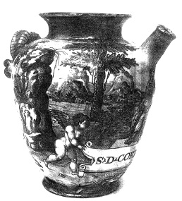

ŞEKİL 62. Urbino’daki (İtalya) Fontana-atölyesinden fayans ibrik (1565): Urbino, Rönesans İtalya’sının fayans üretim merkezi olup, oradaki en ünlü atölyelerden biri, ünlü usta Orazio Fontana’nın (1510-1571) ailesine aitti. Resimdeki ibrik, çok-renkli (polikrom) boyama ile hazırlanmış olup boyaması ve sırı, 16. yüzyıl fayans sanatının en usta ürünlerinden biri olarak nitelenebilir. Rulo halindeki yazıda eczanın adı, S(YROPUS) D(E) CORTI(CE) CITRI (Limon Kabuğu Şurubu) şeklinde geçmektedir (Alman Eczacılık Müzesi, Heidelberg).47